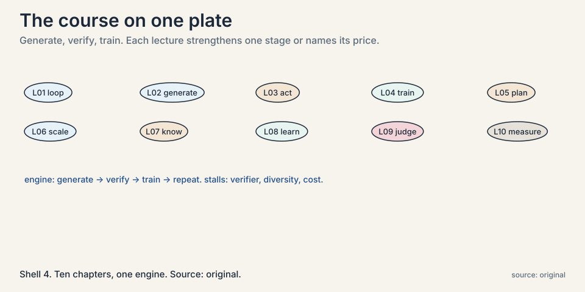
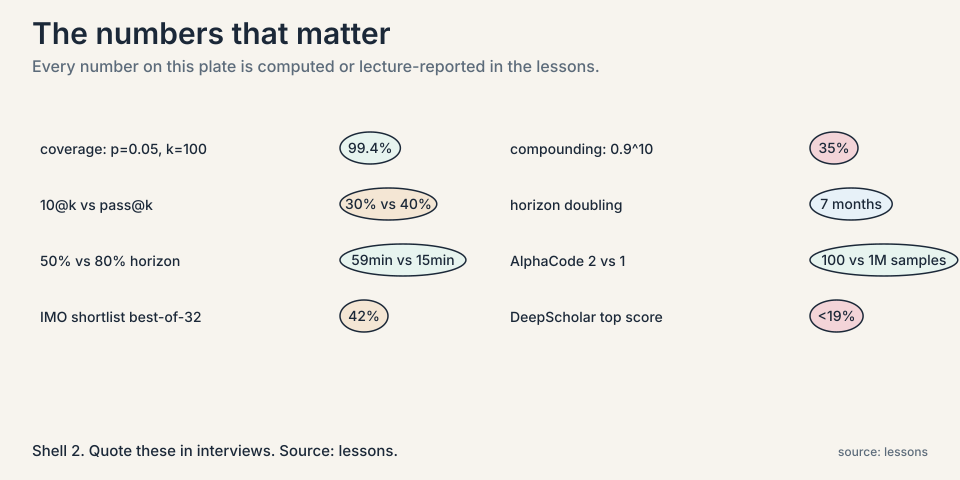

CS329A Crash Course
Read this and the lessons become review. Everything below is in the lessons with the numbers. This page compresses it to what you must know to clear the exam.
The one engine
Everything in this course is one loop:
Generate many attempts. Verify them automatically. Train on the winners. Repeat. Mnemonic: GVT.
Compute flows between two axes. Test-time compute spends money per question: sampling, traces, tools, search. Train-time compute spends it once: fine-tuning, reinforcement learning on winners. The verifier is the bottleneck behind all of it. It must be fast, automatic, and honest. Slow or subjective domains stay outside the loop.

The ten chapters, fast
L01: The loop itself
Test-time compute makes data. Train-time compute absorbs it. The course’s through-line: whenever a loop feeds its own outputs back as training signal, it improves, and the constraints are always verifier quality and diversity. Memory aid: the engine is GVT. Every chapter strengthens one stage or names its price. L01
L02: Test-time scaling
Coverage at k tries is 1-(1-p)^k. Worked: p=0.05, k=10 gives 40%. k=100 gives 99.4%. Coverage is log-linear in samples. A Llama 3 8B with thousands of verified samples beats GPT-4o-class models at one try. DeepSeek v3 at 1,000 samples beats Claude 3.5 Sonnet and o1-preview on SWE-bench-style tasks. Majority vote plateaus at 10-50 samples: the generation-verification gap, where the model knows more than it can say. Archon composes generators, critic, ranker, fuser, tuned by search: +14.1% average pass@1 over frontier closed models, open models only. Price: pays per question, needs the verifier at answer time. Easy questions: 1-2 samples. Hard questions: sequential revision beats parallel sampling. L02

L03: ReAct, the acting loop
Thought, action, observation, repeat. Mnemonic: TAO. Tools ground reasoning in facts from the world. Paper numbers: ALFWorld +34 points absolute, WebShop +10, best trial 71%, from 1-2 examples. Price: compounding error. Ten 90%-reliable steps give 0.9^10 = 35% task success. Poor tool choice grounds the trace in wrong facts. Tool descriptions are prompts, not docs. Overthinking stalls. Underthinking acts blind. Memory across tasks is named and unsolved. L03
L04: RLEF, execution as teacher
Code has a free teacher: run it. Inference-time loop: try, read the test failure, retry. Train-time: PPO on binary reward from hidden private tests. Public tests guide iteration. Private tests grade, blocking memorization. Turn-level value: one advantage for all tokens in the program. PPO’s clip caps each update for stability. Price: sparse signal, needs executable tests, failures teach nothing. Never start from a model that passes nothing. L04
L05: LATS, tree search over plans
ReAct walks one path. LATS grows a tree. Six stages, mnemonic SEESBR: select by UCT, expand, evaluate, simulate, backpropagate, reflect. Evaluate: LLM-judge 0-1 plus self-consistency frequency. Worked: judge 0.6 + consistency 0.75 = 1.35. Backprop (1.353+1)/4 = 1.26. UCT = value + csqrt(ln(parent visits)/node visits): exploit plus explore. Worked: 2.13 beats 1.55. SPRINT: parallel plan-execute baked in. SWiRL: process rewards before tools answer, transfers across tools. Price: hundreds of model calls per task. The judge can mislead the tree. Irreversible actions out of scope. L05
L06: AlphaCode, sampling at scale
10@k: generate k programs, submit at most 10. Example tests remove ~95%. Clustering by behavior buys diversity: 41B plus clustering beats 41B beats 9B. Log-linear in samples. Bigger models steeper slopes. Selection bottleneck: unlimited pass@k passes 40%, 10@k stalls near 30%. AlphaCode 2: fine-tune the Gemini Pro family for diversity, learned scoring model replaces heuristic clustering. 100 samples matched AlphaCode’s million. ~85% of Codeforces participants beaten. Price: diversity must keep growing with samples. Loss is a poor proxy for solve rate. Breadth for one-artifact problems, depth for dependent steps. L06
L07: Deep research agents
Knowledge cutoffs plus silent guessing. Uncertainty words (“perhaps”, “wait”) mark gaps. Single-shot RAG dumps 10 documents and still fails. Agentic RAG: search mid-reasoning per gap, query the gap not the question. Search-o1: reason in documents, extract chunks, file notes not documents. Chemistry toy: guess 14 wrong, dump wrong, search plus read 10 right. Context length is not reasoning capacity. Price: trigger heuristics miss gaps both ways. Every search costs latency and context. Stop when chunks stop changing the answer. L07
L08: STaR, teaching reason
No reasoning data on the internet, so manufacture it. Attempt 10k problems, keep the 3k with correct answers, fine-tune, repeat. Rationalization: for failures, hand the model the answer as hint, keep the rationale, train without the hint. Construction is easier than search. Three assumptions: correct answer implies good rationale (the live wire), the model can rationalize, the base can bootstrap. Price: unfiltered rationales bake in bad reasoning. Needs answer keys. Negatives teach nothing. Industrial form: DeepSeekMath (120B curated tokens, 51.7% MATH at 7B) with GRPO (group-relative advantages, majority@K not pass@K). DAPO: dynamic sampling, watch entropy and response length. L08
L09: The verifier bottleneck
Outcome rewards approve right answers with broken reasoning. LLM-as-judge certifies invalid proofs as valid. DeepSeek-Math V2: meta-verifier judges the judge, generator and verifier lift each other. 8 iterations climbing, best-of-32 reaches 42% proof score on IMO 2024 shortlist. Absolute Zero: no answer keys, model proposes its own tasks scored by learnability (1 - success rate), verified by execution. Multi-agent debate: generators plus critic keep chains diverse where single-agent fine-tuning collapses. Gains transfer to adjacent domains. Weaver: filter weak verifiers, weight on ~1% labels, distill small. Price: human-seeded standards. Slow domains (chip sims, wet labs) have no fast judge. Stand-in reward models invite hacking. L09
L10: Measuring agents
METR time horizon at 50% success doubles every 7 months: 2 seconds (GPT-2, 2019), 8 minutes (GPT-4, 2023), 59 minutes (Claude 3.7, 2025). At 80% success the frontier drops to about 15 minutes. 50% is not deployable. Failure modes: poor planning, poor tool choice, no error recovery, lost goal state (the unsolved one). GDPval: instruction following fails on expert tasks. DeepScholar: no system above 19%, fluency trades off against verifiability. Open problems: diversity, verifiers, curriculum, non-verifiable domains, cost of intelligence. Intelligence per watt: local <=20B models cover most chat queries. L10
Cheat-sheet tables
Which method for which problem
| Your problem | Reach for | Why |
|---|---|---|
| Answers exist but one try misses them | Repeated sampling + verifier (L02) | Log-linear coverage, cheapest capability gain |
| Model cannot check facts or run code | ReAct (L03) | Grounds each step in tool observations |
| Coding agent must improve itself | RLEF (L04) | Execution is a free, honest teacher |
| One path keeps failing, need alternatives | LATS (L05) | Tree keeps untried branches alive |
| Competition coding, one program per problem | AlphaCode pattern (L06) | Breadth + learned selector |
| Knowledge cutoff, silent guesses | Agentic search (L07) | Fill gaps mid-thought, read the docs |
| No reasoning data, but answer keys exist | STaR (L08) | Manufactures rationales from answers |
| Verifier is weak or learned | Meta-verifier / Weaver / debate (L09) | Judge the judge, maintain diversity |
| “Is it ready to deploy?” | METR-style eval at 80% (L10) | 50% capability is not reliability |
Test-time vs train-time, fast lookup
| Test-time compute | Train-time compute | |
|---|---|---|
| Weights | Fixed | Change |
| Examples | Sampling, traces, tools, search | Fine-tuning, RL on winners |
| Pays | Per question, forever | Once, up front |
| Needs | Verifier at answer time | Verifier during training |
| Fails when | No checkable answer | No training signal |
Memory aids
- GVT: generate, verify, train. The whole course is one loop.
- TAO: thought, action, observation. The ReAct cycle.
- SEESBR: select, expand, evaluate, simulate, backpropagate, reflect. The LATS cycle.
- 10@k: 10 submissions from k samples. The AlphaCode budget.
- The 35% rule: 0.9^10 = 35%. Ten 90%-reliable steps make a 35%-reliable task.
- The 99% rule: p=0.05, k=100 gives 99.4% coverage. One hundred diverse tries almost always work.
- The 50/15 rule: 59 minutes at 50%, 15 at 80%. 50% is not deployable.
- The 1% rule: Weaver weights verifier quality on ~1% labeled data. Small labels, large payoff.
Never-confuse pairs
- Coverage vs pass@k. Coverage: at least one of k solves it, oracle assumed. Pass@k: the same, verifier folded in.
- Test-time vs train-time compute. Test-time: weights fixed, answers improve per question. Progression in answers per question. Train-time: weights change, answers get cheaper forever after.
- Outcome vs process reward. Outcome: checks the ending, cheap, blind to broken steps. Process: checks the steps, expensive, mostly does not exist yet.
- ReAct vs chain of thought. CoT: reasoning only. ReAct: reasoning interleaved with tool actions.
- Generation vs selection. Generation: is the winner in the set. Selection: can the filter pick it. The bottleneck moved from the first to the second.
- Verifier vs reward model. Verifier: any judge. Reward model: a learned verifier, gameable.
- Majority@K vs pass@K. Majority@K: the most common answer is right. Pass@K: any of K is right. GRPO improves the first, not the second.
- 50% horizon vs 80% horizon. 50%: capability, steep. 80%: deployability, lags years.
If-this-then-that rules
- If samples are not diverse, then the effective k is the cluster count. Stop sampling, fix the generator.
- If the verifier is learned, then hold out a trusted check the loop cannot see. Flat held-out plus rising loop scores means hacking.
- If the task has irreversible actions, then tree search is out.
- If every prompt in the batch is all-pass or all-fail, then the batch carries no gradient. Drop them.
- If entropy falls while loss falls, then the policy is collapsing. Stop.
- If response length grows with flat scores, then the model is padding, not reasoning.
- If the question is easy, then 1-2 samples. If hard, then sequential revision beats parallel sampling.
- If the judge must be fast, then answer keys and tests qualify. Learned judges risk honesty. Humans do not qualify.
- If deploying, then measure at 80% success, not 50%.
- If the trigger fires constantly, then calibrate it: keep only searches that change answers.
Rapid-fire self-tests
1. Why does majority vote plateau at 10-50 samples? Because it samples the answer distribution, not the coverage set. It cannot create a capability that never appears.
2. A model solves 5% of problems per try. How many tries for 90% coverage? k = ln(0.1)/ln(0.95) = 44.9, so 45 tries.
3. Why does 0.9^10 = 35% matter for ReAct? Each step’s errors compound. Ten steps at 90% reliability each give 35% task success. Every mechanism subchapter is a way to buy reliability back.
4. Why do private tests exist in RLEF? To block memorization. Public tests guide iteration. Private tests grade. A model that memorizes public tests gets zero from the private ones.
5. What does UCT balance in LATS? Exploitation (high-value branches) against exploration (under-visited branches). Worked: value 2.13 with 3 visits beats value 1.55 with 8 visits.
6. Why did AlphaCode 2 beat AlphaCode with 100x fewer samples? Learned scoring replaced heuristic clustering, and the generator was fine-tuned for diversity. Effective k, not raw k.
7. What is the generation-verification gap? The model knows more than it can say: gold answers appear with enough samples, but the model cannot select them. The gap is a verifier problem, not a knowledge problem.
8. Why do outcome rewards approve broken reasoning? They check the ending, not the steps. Right answer with broken reasoning passes. The fix is process rewards or meta-verifiers, and neither exists cheaply yet.
9. What does GRPO improve, and what does it not? Majority@K goes up, pass@K stays flat. The distribution gets sharper, not wider. More consistent, not smarter.
10. Why is the 50% horizon not a deployment metric? Because 50% success is a coin flip. Claude 3.7: 59 minutes at 50%, about 15 at 80%. Deploy on the 80% number.
11. What is the one failure mode the course never solves? Lost goal state. Planning gets LATS, tool choice gets grounding, recovery gets reflection. Memory of the objective over long horizons stays open.
12. What makes a domain eligible for the self-improvement loop? A fast, automatic, honest verifier. Code execution qualifies. Human judges do not. Slow domains (chip sims, wet labs) are excluded until a fast stand-in exists.
13. Why query the gap, not the question, in agentic search? Because the search must fill what the reasoning lacks, not repeat what it knows. Notes filed per gap, not documents dumped per question.
14. What is the live wire in STaR? Correct answer implies good rationale. It is an assumption, not a theorem. Outcome checks leak through it, and unfiltered rationales bake in bad reasoning.
15. You have a coding agent and a verifier. Do you add more samples or more training? Both, in order. First, sampling: log-linear coverage is the cheapest gain. Then train on the verified winners so the answers get cheaper. The verifier is the bottleneck either way.